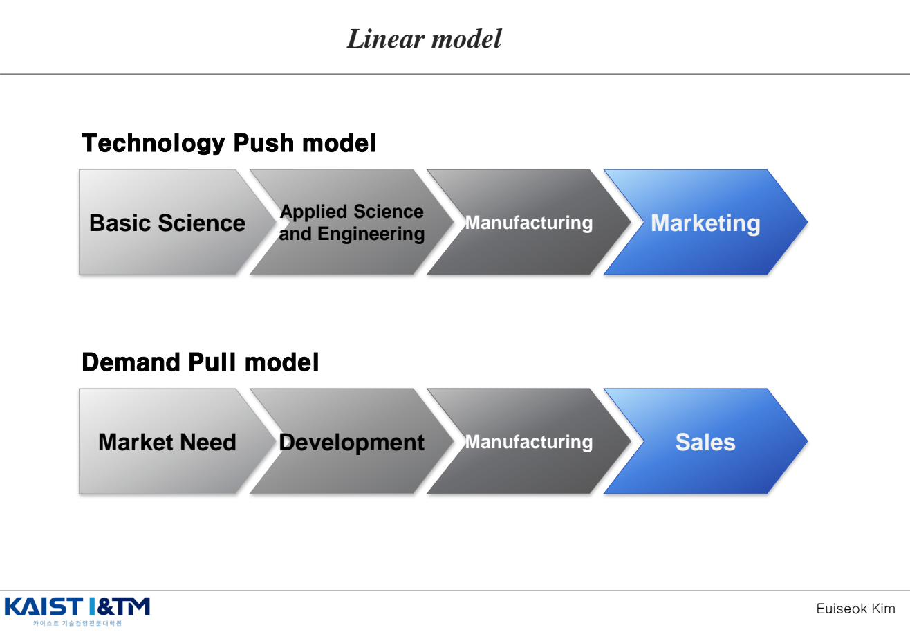
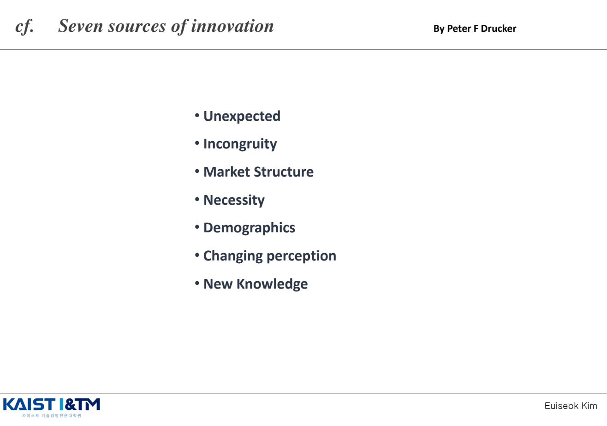
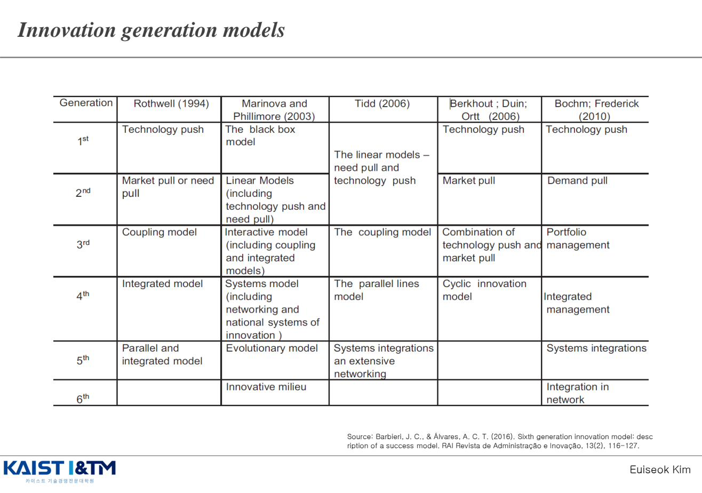
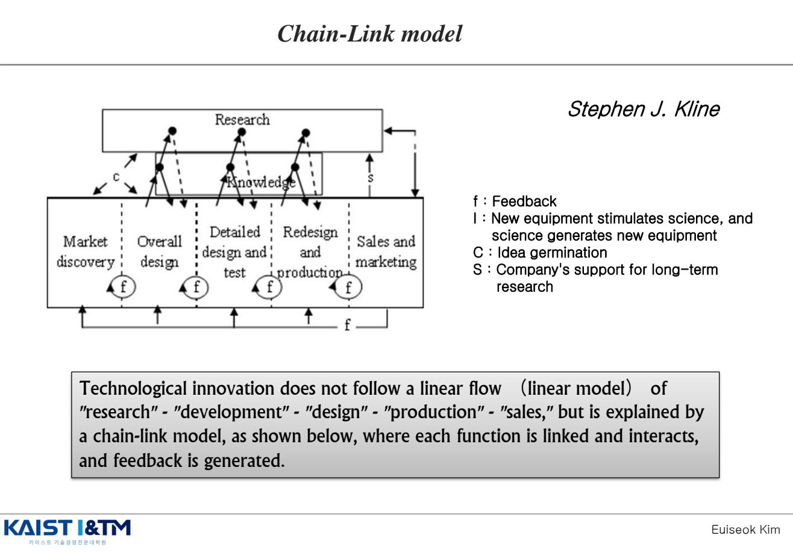
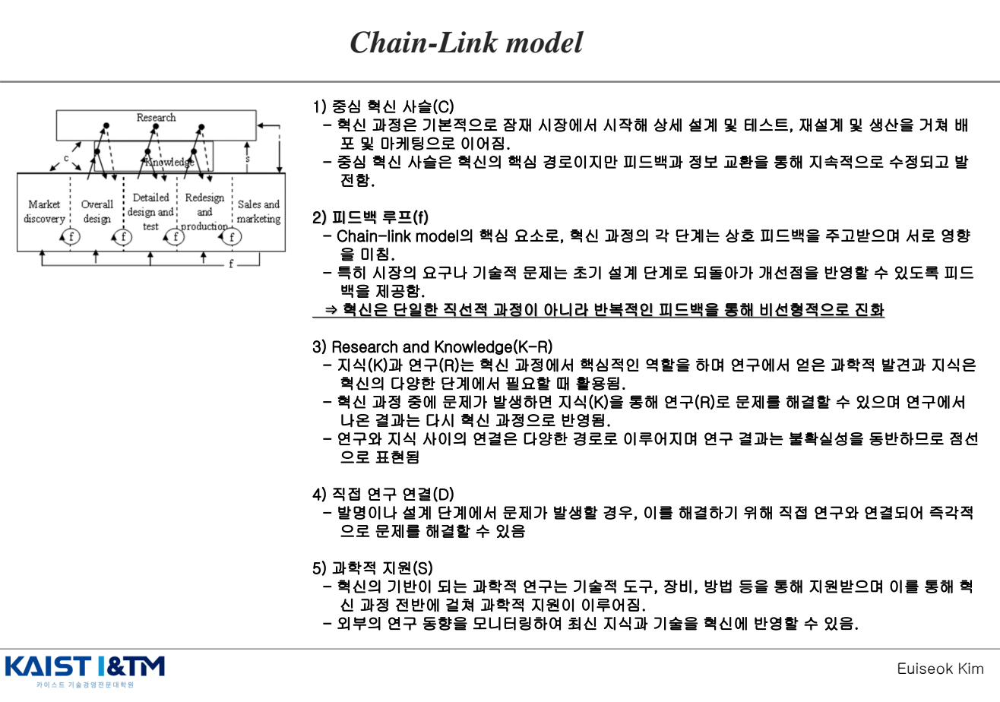
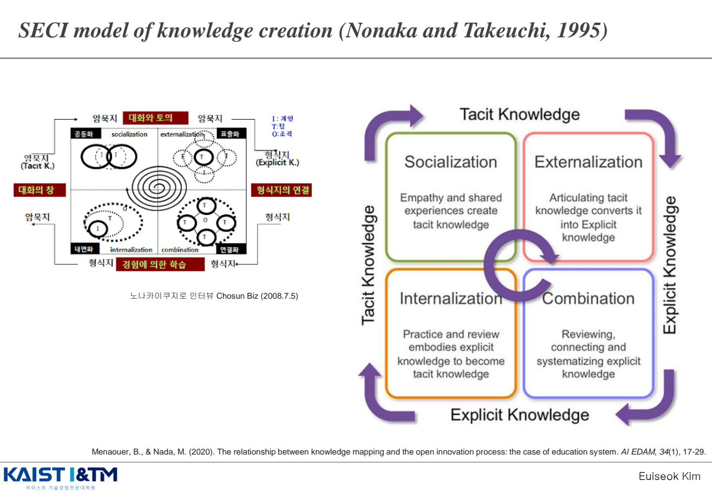
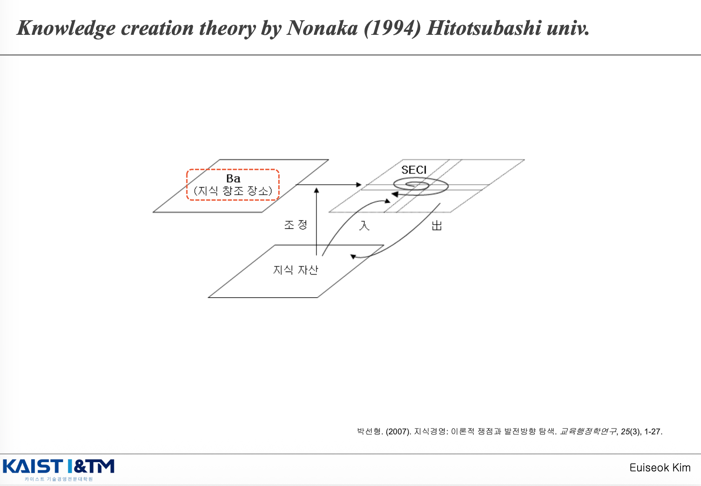
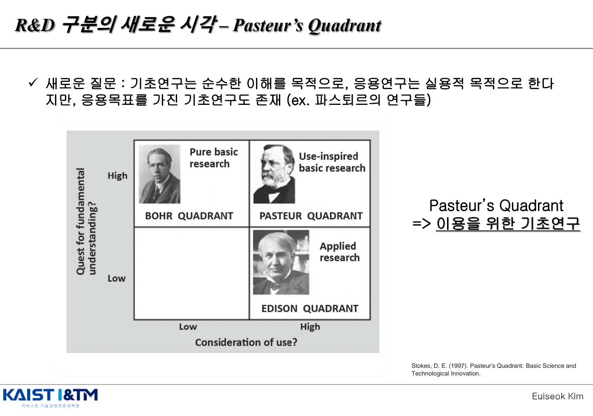

Sources of Innovation · 혁신의 원천
"혁신은 어디에서 오는가?" 이 질문에 대한 답은 시대마다 달라졌다. 처음에는 과학(Technology Push)이 답이라 생각했고, 다음에는 시장 수요(Demand Pull)가, 그다음은 둘의 결합과 상호작용(Chain-Link)이 답이 되었다. IM03은 이러한 혁신 원천 모델의 진화와, 그 토대가 되는 과학·기술·지식·R&D의 개념을 잡는 챕터다.
학습 개요
- Technology Push vs Demand Pull: 가장 기본적인 두 모델과 그 한계
- Drucker의 7가지 혁신 원천
- 혁신 모델의 6세대 진화: Tech Push → Demand Pull → Coupling → Integrated → Systems → Innovative milieu
- Kline & Rosenberg의 Chain-Link 모델: 5개 경로(C/f/F/K-R/D/S)와 비선형성
- Mode 1 vs Mode 2 지식 생산
- Nonaka의 SECI 모델: 형식지와 암묵지의 순환
- Stokes의 Pasteur's Quadrant: 기초연구와 응용연구의 새 시각
0. Recap — 슘페터의 혁신 정의
IM01·02에서 본 슘페터의 정의를 한 번 더 정리해 두자. 본 챕터의 모든 모델은 이 정의를 출발점으로 한다.
- New Combination (신결합): 생산은 여러 요소·힘의 "결합"이며 성장은 새로운 결합에서 일어난다. "마차를 아무리 연결해도 철도가 되지 않는다."
- Creative Destruction (창조적 파괴): 낡은 방식을 파괴하고 더 효율적인 새로운 방법·제품·서비스로 대체하는 과정.
1. Technology Push vs Demand Pull EXAM

1.1 Technology Push 모델 (Science Push)
"기술이 혁신을 밀어 올린다"는 관점. 흐름은 Basic Science → Applied Science & Engineering → Manufacturing → Marketing. 과학적 발견과 기술적 진보가 시장에 새로운 제품·서비스를 가져다 준다는 모델로, 2차 세계대전 직후의 R&D 정책을 지배했다(Vannevar Bush의 Science: The Endless Frontier, 1945).
1.2 Demand Pull 모델 (Market Pull, Need Pull)
"시장 수요가 혁신을 끌어당긴다"는 관점. 흐름은 Market Need → Development → Manufacturing → Sales. Jacob Schmookler 등 1960년대 연구자들이 "혁신은 과학이 아니라 수요에서 시작된다"고 주장하면서 주류가 되었다.
1.3 두 모델의 한계
- 둘 다 선형(linear)이라는 가정 — 한 방향으로만 흐른다고 봄
- 피드백이 없음 — 시장에서 받은 정보가 R&D로 돌아오는 흐름을 설명 못함
- 현실의 혁신은 과학·기술·시장이 동시에 상호작용하며 진행됨 → 이를 설명하는 것이 후에 등장할 Chain-Link 모델
1.4 Government Push (Public Push)
혁신의 원천에는 정부의 적극적 역할도 있다. 두 가지 정부 개입 방식:
- Supply-side (공급측): R&D 직접 투자, 연구기관 설립, 세제 혜택, 인력 양성
- Demand-side (수요측): 공공 조달, 표준 설정, 규제 환경 조성 — "정부가 첫 고객" 역할
2. Drucker의 7가지 혁신 원천 EXAM
Peter F. Drucker가 Innovation and Entrepreneurship(1985)에서 제시한, 기업가가 의도적으로 활용할 수 있는 혁신의 7가지 원천이다. 앞쪽 4개는 기업 또는 산업 내부의 원천, 뒤쪽 3개는 외부 환경의 원천이다.

| 원천 | 설명 |
|---|---|
| ① Unexpected (예기치 못한 일) | 예상치 못한 성공·실패·외부 사건이 새로운 기회를 드러낸다 |
| ② Incongruity (불일치) | 현실과 기대 사이의 불일치 — 사람들의 가정과 실제 결과의 격차에서 기회 발견 |
| ③ Market Structure (시장 구조) | 산업 구조나 시장 구조의 변화 — 신규 진입 기회 |
| ④ Necessity (프로세스 필요) | "필요는 발명의 어머니" — 프로세스의 약점·병목을 해결하는 혁신 |
| ⑤ Demographics (인구 통계) | 인구 구조 변화(고령화, 도시화 등)는 가장 예측 가능한 외부 변화 |
| ⑥ Changing Perception (인식 변화) | 사회의 가치관·태도 변화 (예: 건강·환경 의식) |
| ⑦ New Knowledge (새로운 지식) | 가장 화려하지만 가장 위험·시간 소요가 큰 원천 — 과학적 발견 기반 |
외우는 순서 팁
U-I-M-N | D-C-N — Unexpected, Incongruity, Market, Necessity (기업/산업 내부) | Demographics, Changing perception, New knowledge (외부 환경).
3. 혁신 모델의 세대별 진화
학자에 따라 분류는 조금씩 다르지만, 혁신 모델은 대체로 6세대로 정리된다. 시간이 갈수록 모델이 더 비선형·통합적·네트워크적이 됨을 보이면 된다.

| 세대 | 핵심 모델 (Rothwell 1994 기준) | 특징 |
|---|---|---|
| 1st | Technology Push | 과학 → 시장 일방향 |
| 2nd | Market Pull / Need Pull | 시장 → 과학 일방향 |
| 3rd | Coupling Model | 과학·시장의 결합 — 양방향 |
| 4th | Integrated Model | 기업 내 부서 통합, 동시 공학, JIT 등 |
| 5th | Parallel and Integrated Model / Systems Integration | 외부 네트워크까지 통합 (전략적 제휴, ICT 활용) |
| 6th | Innovative milieu / Open & Collaborative | 혁신 생태계, 오픈 이노베이션 (IM06와 연결) |
4. Chain-Link 모델 (Kline & Rosenberg, 1986) EXAM
Kline과 Rosenberg가 An Overview of Innovation(1986)에서 제안한, 선형 모델의 한계를 극복하기 위한 모델. 예상 문제에서 빈출되는 중요한 모델이다.
기술 혁신은 "research → development → design → production → sales"의 선형 흐름을 따르지 않는다. 대신 각 기능이 서로 연결(linked)되어 상호작용하고 피드백이 발생하는 사슬-연결(chain-link) 모델로 설명된다.

4.1 5단계 중심 혁신 사슬 (C: Central Chain)
- Market Discovery (잠재 시장 발견) — 새로운 제품·서비스에 대한 수요 인식
- Invent and/or Produce Analytic Design (발명 및 분석적 설계) — 시장 요구에 대응하는 아이디어 발명
- Detailed Design and Test (상세 설계 및 테스트) — 생산 전 테스트로 최적화
- Redesign and Produce (재설계 및 대량 생산) — 초기 설계의 문제 해결 후 양산
- Distribute and Market (배포 및 마케팅) — 시장 출시와 소비자 도달
4.2 다섯 가지 경로 / 핵심 요소

| 기호 | 의미 | 설명 |
|---|---|---|
| C | 중심 혁신 사슬 (Central Chain) | 위 5단계의 핵심 흐름. 그러나 피드백과 정보교환을 통해 지속적으로 수정·발전됨 |
| f, F | 피드백 루프 (Feedback) | Chain-link의 핵심 요소. 각 단계는 상호 피드백을 주고받음. 특히 시장 요구·기술 문제는 초기 설계 단계로 되돌아가 개선점 반영 |
| K-R | Knowledge ↔ Research | 혁신 과정 중 문제 발생 시 지식(K)을 통해 연구(R)로 해결. 점선으로 표현(불확실성 포함) |
| D | Direct link to Research | 발명·설계 단계에서 문제 발생 시 직접 연구와 연결되어 즉각 해결 |
| S | Long-term Research / Science 지원 | 혁신의 기반이 되는 과학적 연구는 기술적 도구·장비·방법 등을 통해 혁신 과정 전반을 지원 |
핵심 명제
혁신은 단일한 직선적 과정이 아니라 반복적인 피드백을 통해 비선형적으로 진화한다. 과학(Science)은 혁신의 출발점이 아니라 모든 단계를 지원하는 자원 풀(pool)이다.
5. Mode 1 vs Mode 2 지식 생산 (Gibbons et al., 1994)
지식이 만들어지는 방식의 패러다임 변화를 다룬 모델. Chain-Link와 마찬가지로 전통적 선형관에서 벗어나는 흐름을 잡는다.
| Mode 1 (전통) | Mode 2 (현대) | |
|---|---|---|
| 지식 생산 동기 | 학문적 호기심, 진리 추구 | 실용적 응용 맥락에서의 문제 해결 |
| 생산 주체 | 대학·학계 (단일 학문) | 대학·기업·정부·시민사회 등 다양한 주체 |
| 학문성 | Disciplinary (단일 학문 기반) | Transdisciplinary (학제 간 융합) |
| 품질 통제 | 동료 평가 (peer review) | 사회적 책임성, 다양한 이해당사자 |
| 예시 | 전통 학술 연구 | 의료 바이오, AI 윤리, 환경 정책 등 |
Mode 2는 IM10(NIS, 국가혁신시스템) 챕터의 Triple Helix(대학·산업·정부)와 직접 연결된다.
6. 지식 경영과 SECI 모델
6.1 지식 경영 (Management of Knowledge, KM)
지식 경영이란 지식의 축적과 창출, 이를 조직 전반에 효과적으로 적용되도록 해주는 지식 공유 활동이다. 1986년 UN ILO 후원의 유럽경영컨퍼런스에서 처음 등장한 개념.
6.2 명시적 지식 vs 암묵적 지식
| 명시적 지식 (Explicit / 형식지) | 암묵적 지식 (Tacit / 암묵지) | |
|---|---|---|
| 표현 가능성 | 쉽게 표현·개념화·코드화·공식화되어 저장·접근 가능 | 표현·추출이 어려움. 글·말로 전달하기 힘듦 |
| 전달 방식 | 객관적, 글·말로 쉽게 전달 가능 | 운동기술, 개인적 지혜, 경험, 통찰력, 직관 등 |
| 예시 | 매뉴얼, 데이터베이스, 특허, 보고서 | 장인의 기술, 조직의 문화, 노하우 |
6.3 SECI 모델 (Nonaka & Takeuchi, 1995) EXAM
일본의 노나카 이쿠지로(Nonaka)와 다케우치 히로타카(Takeuchi)가 제안한 지식 창조의 4단계 순환 모델. 암묵지와 형식지가 어떻게 서로 변환되며 조직 내 지식이 확장되는지 설명한다.

| 단계 | 방향 | 의미 |
|---|---|---|
| S: Socialization (공동화) | 암묵지 → 암묵지 | 공감과 경험 공유를 통해 암묵지가 전달됨 (도제식 학습) |
| E: Externalization (표출화) | 암묵지 → 형식지 | 암묵지를 언어·은유로 명시화하여 형식지로 전환 |
| C: Combination (연결화) | 형식지 → 형식지 | 흩어진 형식지를 검토·연결·체계화 |
| I: Internalization (내면화) | 형식지 → 암묵지 | 실천과 학습을 통해 형식지가 개인의 암묵지로 흡수됨 |
이 4단계는 한 번 돌고 끝이 아니라 나선형(spiral)으로 계속 순환하며, 개인 → 팀 → 조직 → 조직 간으로 지식이 확장된다.
SECI가 일어나는 장(場) — Ba

Ba(바)는 Nonaka의 지식창조이론에서 말하는 지식 창조의 장소, 즉 전환의 장이다. 지식경영의 핵심은 단순히 정보를 저장하는 것이 아니라, 이런 전환의 장을 통해 혁신 지식이 생성되도록 만드는 데 있다.
특히 SECI 관점에서 중요한 점은 형식지가 다시 암묵지로 내면화되어야 한다는 것이다. 매뉴얼, 문서, 데이터베이스처럼 정리된 형식지가 실제 실천과 학습을 거쳐 개인의 숙련, 직관, 노하우라는 발달된 암묵지로 전환될 때 비로소 새로운 지식 창조의 출발점이 만들어진다.
Ba의 핵심 의미
기업 안에서 암묵지 ↔ 형식지 전환이 일어나는 지점을 많이 만들수록, 그리고 그 순환이 더 깊고 풍부하게 반복될수록 조직의 지식 창출 능력도 커진다. 결국 Ba는 SECI 나선이 실제로 작동하는 공간적·관계적 기반이라고 볼 수 있다.
7. Pasteur's Quadrant — R&D 구분의 새로운 시각
Donald Stokes가 Pasteur's Quadrant(1997)에서 제시한 R&D 분류. 전통적으로 R&D는 기초연구 vs 응용연구 이분법으로 나뉘었으나, Stokes는 두 축으로 나누어 2×2 매트릭스로 재구성했다.

| Consideration of use? — Low | Consideration of use? — High | |
|---|---|---|
| Quest for fundamental understanding? — High | Bohr Quadrant Pure basic research (순수기초연구) | Pasteur Quadrant Use-inspired basic research (이용을 위한 기초연구) |
| Quest for fundamental understanding? — Low | — | Edison Quadrant Applied research (응용연구) |
핵심 통찰
파스퇴르의 연구처럼 "근본적 이해를 추구하면서 동시에 응용 목표를 가진" 연구가 존재한다. 이 사분면이 가장 가치 있고, 현대 R&D 정책의 지향점이 되었다. 한국의 "기초원천연구" 개념도 여기에서 파생된 것.
예상 문제 매칭
📌 Chain-Link 모델
"Kline & Rosenberg의 Chain-Link 모델을 설명하고, Linear Model과의 차이를 서술하시오."
답안 핵심:
- 선형 모델 비판: research → development → production → sales의 일방향 가정은 현실과 다름
- 5단계 중심 사슬(C): 시장 발견 → 발명·설계 → 상세 설계·테스트 → 재설계·생산 → 배포·마케팅
- 핵심 요소: 피드백(f), 지식↔연구(K-R), 직접 연구 연결(D), 과학적 지원(S)
- 결론: 혁신은 비선형이며 반복적 피드백을 통해 진화. 과학은 출발점이 아니라 모든 단계를 지원하는 자원 풀
📌 Drucker의 7가지 혁신 원천 (예상문제집 7번)
"Drucker가 제시한 7가지 혁신 원천을 나열하고, 내부 원천과 외부 원천으로 구분하여 설명하시오."
답안 핵심: Unexpected, Incongruity, Market Structure, Necessity (내부 4) / Demographics, Changing Perception, New Knowledge (외부 3). 각각 한 줄씩 풀어 쓰기.
📌 Technology Push vs Demand Pull
"Technology Push 모델과 Demand Pull 모델을 비교 설명하고, 두 모델의 한계와 이를 보완하는 모델을 서술하시오."
답안 핵심: 두 모델의 단계 비교 → 선형성·피드백 부재의 한계 → Chain-Link 모델 / 6세대 진화로 발전.
📌 지식 경영과 SECI 모델 (예상문제집 9번)
"명시적 지식과 암묵적 지식을 구분하고, SECI 모델의 4단계를 설명하시오."
답안 핵심: 명시지(매뉴얼·DB) vs 암묵지(노하우·직관) → SECI 4단계 변환(공동화·표출화·연결화·내면화) + 나선형 순환.
📌 Pasteur's Quadrant
"Pasteur's Quadrant를 그림과 함께 설명하고, R&D 구분의 새로운 시각이 갖는 의의를 서술하시오."
답안 핵심: 2축(근본 이해 / 응용 고려) → Bohr·Pasteur·Edison 사분면 → 핵심: "이용을 위한 기초연구"라는 제3의 영역의 가치.
※ 이 페이지의 모든 그림은 강의자료 IM03_Sources_Sci_Tech.pdf에서 발췌한 것이며, 학습 목적으로만 사용된다.